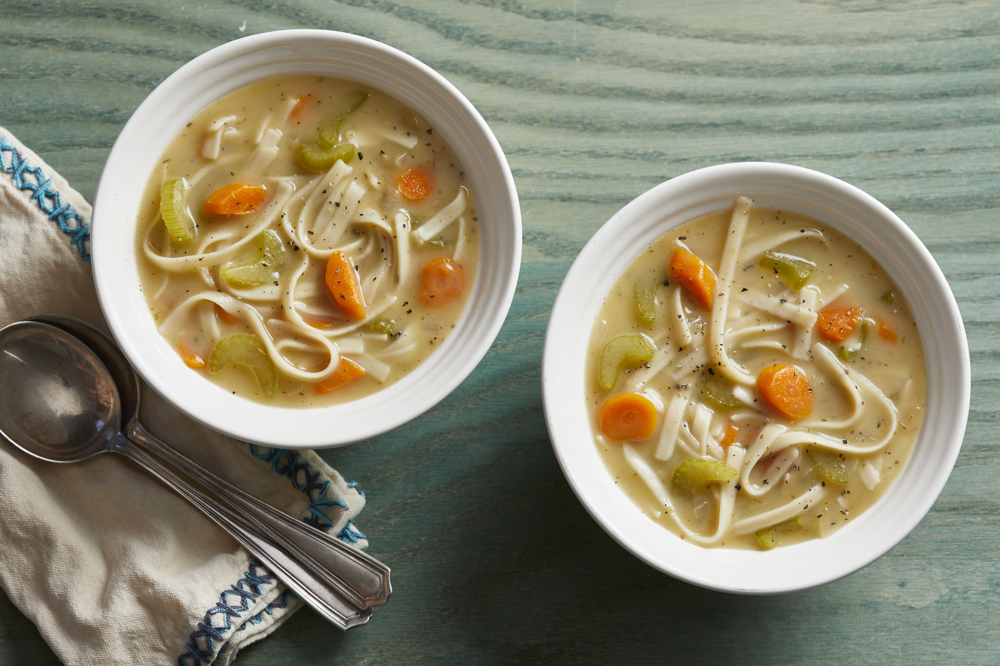

Quick and Easy Noodle Soup
Ingredients:
Directions:
1. Combine the onion, celery, carrots, stock, tamari, marjoram, sage, thyme, and pepper in a 4-quart Dutch oven. Bring to a boil over high heat. Reduce heat to medium-low; cover and simmer for 20 minutes.
2. Stir in the noodles; return to a boil. Cook for 10 minutes more or until noodles are tender.